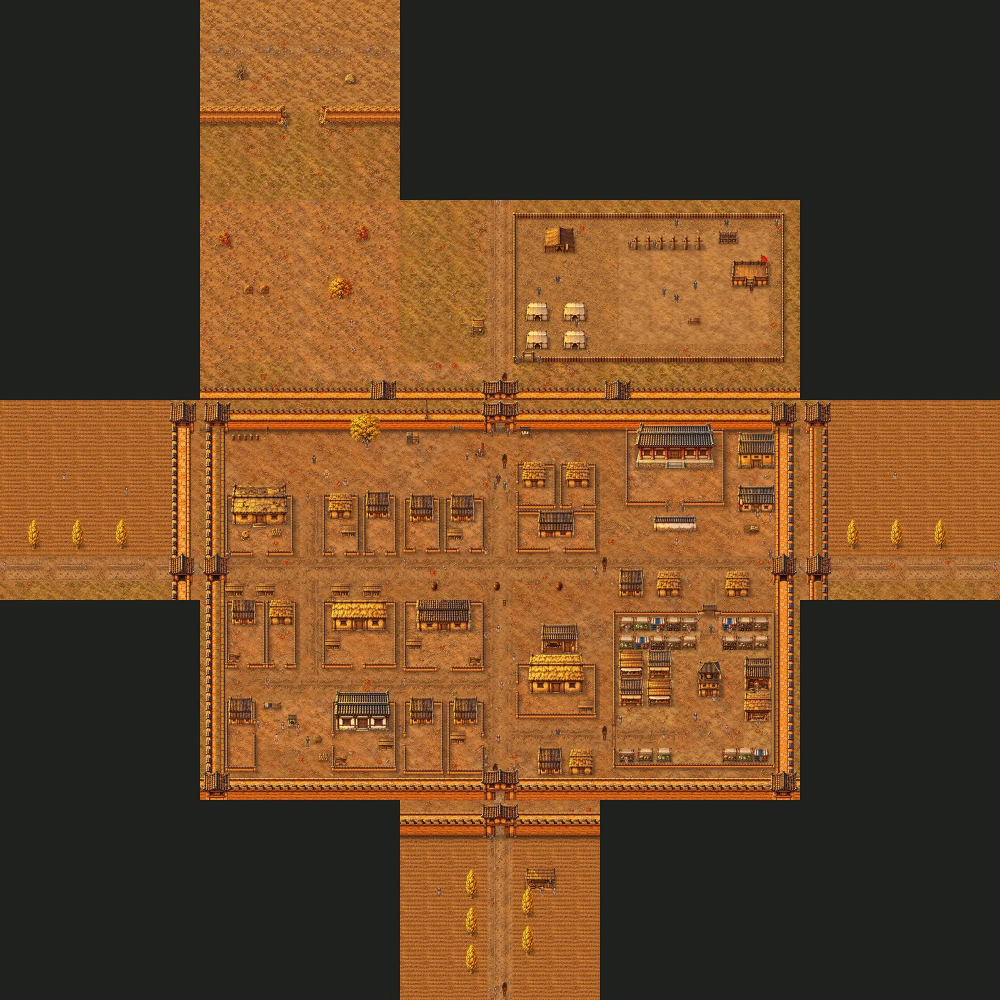
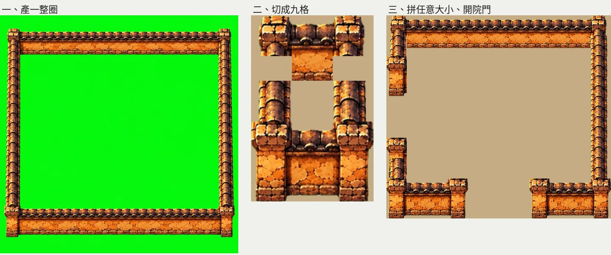
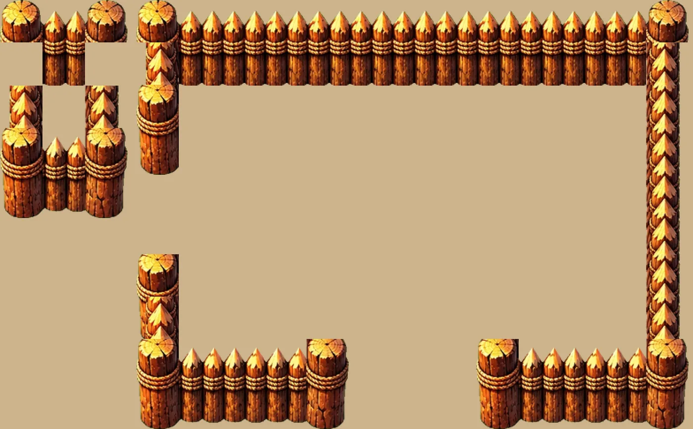
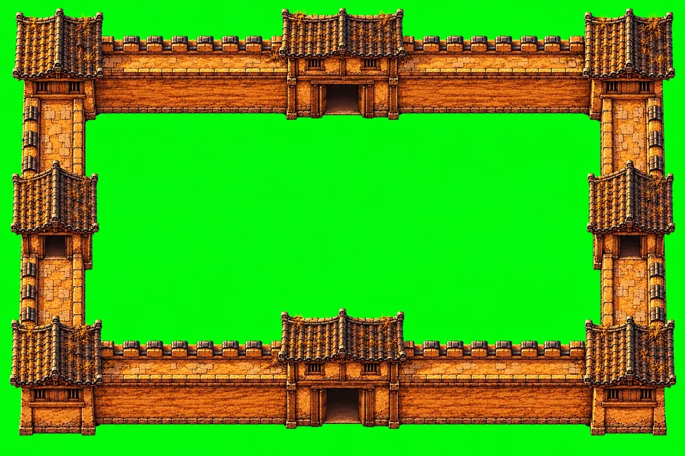
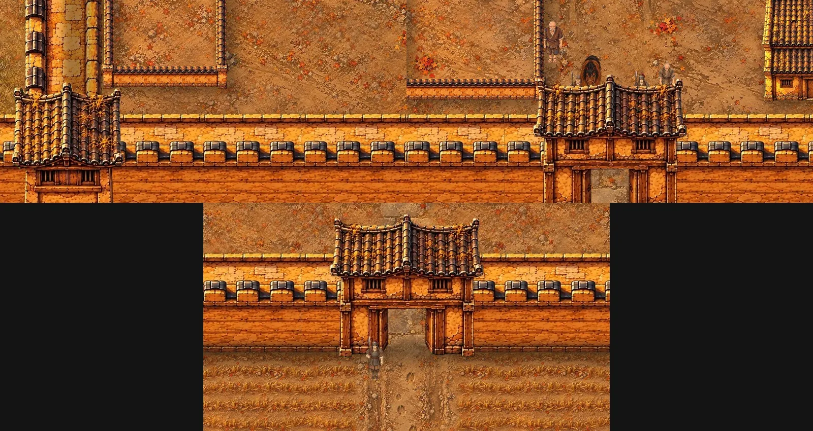
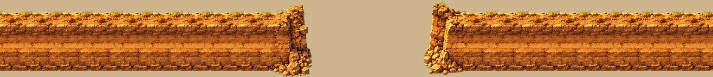
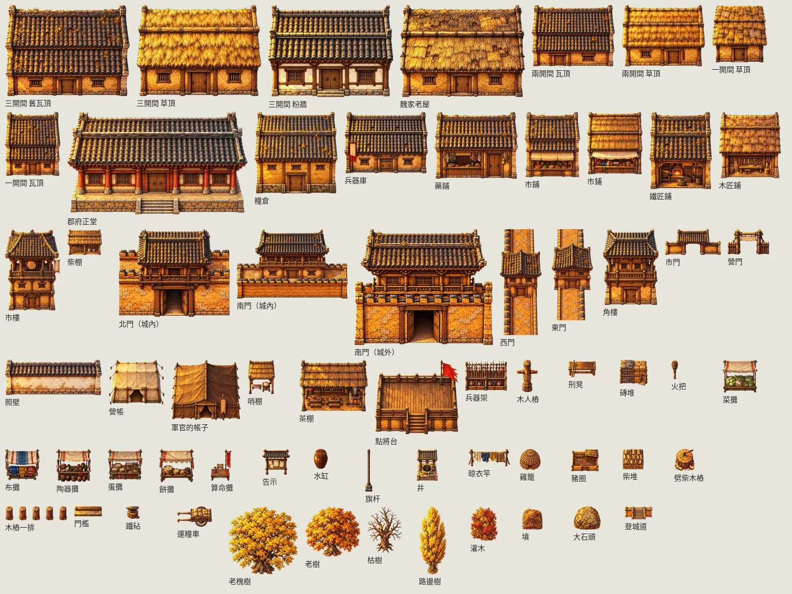
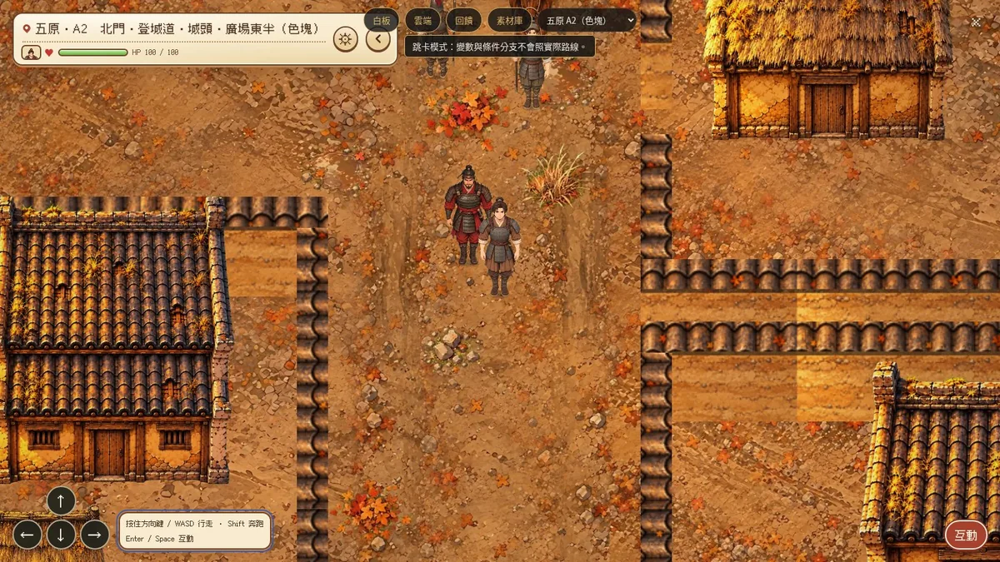

確認頁存檔
這一頁是 2026-10-21 的建城工法：我離開前交代 AI，把五原的素材和做法做完一輪，整理成之後建城、建村的依據。內容是做五原時定下來、試過、被否決的做法，照做事的順序排，附當時的圖。這一頁沒有讓我按的按鈕，倒數第二節「要你決定的」是 AI 列給我的待決事項。同一天下午我改成走進原畫，整張原畫當地圖，做法寫在走進原畫那一章。
五原現在的樣子

13 塊照連結圖拼起來（離線算圖：地面、照圖框下緣排前後的物件、路人站姿）。中間 3×2 是城內，城牆一圈、四個角樓、四座城門；北邊是城北山腳、北門外的路、城北軍營，再往北是邊牆；東西兩邊是田，南門外是大路和茶棚。
先定好的規格
- 一張地圖最大 64×64 格（65 會報錯），一格半公尺。大的地方用好幾張接，走過邊界換到隔壁那一張同一個位置。
- 三層：大地圖（一格約 18 公里）、城或村（好幾張 64×64 的塊）、屋內（從門進去的小地圖）。
- 鏡頭：城和村每一塊 wide（16:9 約 32×18 格），屋內 normal（約 24×13.5 格），大地圖不設鏡頭、人物縮一半。玩家不能自己縮放。
- 視角：所有物件跟地圖同一個鏡頭，鏡頭在南方、從高處往下看。屋頂前後兩片都看得到、屋脊橫過中間，前牆約佔下面三分之一；不轉 45 度、不畫透視；門一律朝南。產圖只送 E3 那一張當角度參考。
- 大小照實際：人約 3.5 格高；一開間 8 格、兩開間 12 格、三開間 18 格（約 9 公尺，門比人高約三成），深 6／7／8 格；院牆一格厚；城牆 6 格厚。
- 整排的東西用同一張圖（或兩三種輪流），才整齊；照《十一分鐘》十九樓的辦公桌群、二十樓整排的機櫃。
- 物件整個放在一塊裡，不跨兩塊的邊，屋頂也算：正房的圖往上長 7–13 格，院子北牆離塊的上緣至少 5 列（作者：城內民房的屋頂好像都被切掉）。跨塊的只有地面和牆。
流程
- 地點表：在大地圖哪裡、分幾塊、四面通到哪（
tools/places.html），給作者看。
- 連結圖：塊怎麼接、四面入口（
tools/links.html）。城四面都能進，城外先到城外的塊，只有城門通城內。
- 配置
plan.yaml：地面、院落 courts、物件（佔地、往上幾格、成排）、城牆簡寫、城門、登城道、路人、劇情點、時期。五原那份是範本。
- 檢查
python3 art/wuyuan/plan.py：相鄰邊對不上、說相通卻走不過、從入口走不到、路人站在牆裡，都會擋；--page 出確認頁。
- 地面：地板組，
ground.py compose <塊…> 拼、ground.py seams 量交界。
- 物件：
objects.py gen 綠幕產 → 逐張看角度 → cut 去背量高度 → sheet 並排看齊不齊 → pack 縮成 webp 進 git。
- 牆：整圈產、自動去背後交給作者修透明、切九格（下一節）。城牆連城門、角樓一起產一整圈，量城樓比牆頂高幾格定牆要內縮幾列，位置在城邊積木頁排；排好的存進 repo，城外那幾塊照城內平移。
- 進遊戲：
CITY_GROUND=tex python3 src/city.py；tests/city_render.py 離線算每一塊整張的樣子（快、看得到整塊）；tests/city_walk.mjs 確認邊界走得過；tests/city_shots.mjs 真的開遊戲截圖。
- 更新確認頁給作者看，照意見改。推上 Larch 前照 README 的推送規矩。
牆：整圈產、切九格
角橫角直空直角橫角
作者畫的 ╭ー╮／| |／╰ー╯：一開始就讓模型把轉角畫好，我們自己剪出能重複的部分。四個角各佔一格，四條邊各取一截一格長的直段，中間不放牆，用的時候一格一格接。院牆、市牆、營柵都這樣做。

左：產出來的一整圈。中：切出來的九格（轉角整根柱子都在格子裡）。右：拼成 11×9 格，南牆和西牆各開一個三格寬的門，門口兩邊放下排的轉角柱子當門柱。
- 提示詞要寫：四面接成封閉的方框、沒有門；東西兩面從上面看是一條直的牆頂；南北兩面露出的牆面要矮；整面花樣一樣才能重複。
- 自動去背以後交給作者修透明（作者：院牆、營柵比照城牆讓我修透明，這是固定的一步）：去背過的那一圈放
art/wuyuan/manual/院牆一圈.png（營柵、市牆同樣），綠底原圖另存 _原圖.png 讓作者補被咬掉的地方；作者存回同一個檔名，objects.py nine 就改用那一張切。
- 直段是在原圖裡挑的一截：開頭接得上前一個轉角、結尾接得回自己的開頭、也接得上後一個轉角。只在兩條直牆中間挑。
- 轉角那一格要包住整根柱子。柱子比牆寬、比橫牆頂高，照牆的寬度切會把柱頭切掉（作者一眼就看出右上、左下的柱頭被切）。
- 牆跨兩塊（營柵從 C1 接到 C2）：碰到塊邊、隔壁還接著的那一邊往外多伸兩格當作有牆，拼好只截這一塊裡的，邊上就不會冒出轉角或門柱。
- 遊戲裡一戶一圈，拼好再切成能排前後的幾張：北牆一張、南牆一張、東西兩面每 5 列一張。

軍營的營柵也是同一套：左上是九格，右邊拼成 13×9，西邊和南邊開門。
城牆、城門、角樓：連在一起產一整圈
角 牆 北門 牆 角
牆 牆
西門 東門
牆 牆
角 牆 南門 牆 角
作者定的：城牆比照院牆，連四個角樓、四座城門一次產一整圈，再切成四個角、四座城門、八段能重複的直牆。一張圖裡的城門和兩邊的牆本來就接在一起，高度、材質一樣。牆段畫短，城樓在圖裡才夠大。

產出來的一整圈（參考圖：E3 定角度、厚城牆那一圈定材質、西門樓定城樓的樣子）。
- 切法：沿四面量輪廓，比牆頂高、比直牆寬的地方就是塔；每塊記下比牆頂高出幾格。
- 北牆的角樓和北門比牆頂高 2.65 格，北邊那一列塊的城牆內縮 3 列；南門從城外看高 3.12 格，城南城外內縮 4 列。內縮的那幾列是牆外的地，城樓的屋頂就不會被地圖上緣切掉。牆在地圖下緣的也一樣：城裡的南牆作者拉到第 55 列，城北城外的牆拉到第 56 列，角樓、城門的底才放得進地圖。
- 牆帶一格一張鋪進地面（走道人走得上去）；角樓、城門疊成物件，人走過門洞會被城樓蓋住。
- 作者修圖：在那一圈裡把四座城門、四個角樓以外的牆去背掉，城樓留在原位；程式照位置分成八塊、算出比牆頂高幾格。牆整條連續鋪，城樓疊在上面，接口藏在城樓底下。
- 牆段從照那一圈另外產的四個長段挑 6–10 格長的一截，解析度比較高；只取一格長的話垛口對不上，黑瓦被黃牆蓋住。
- 垛口一定在城外那一側：北牆從城裡看在上緣，南牆從城裡看在靠畫面那一側（外側垛口高、內側矮牆低），西牆在左、東牆在右。產出來的圖常畫反，要逐面看。
- 角樓、城門往外凸約 1 格、往城裡凸約 2 格：城內的西牆、東牆離地圖邊內縮 2 格，城外那兩塊的牆也往裡挪，整座塔才放得進地圖。
- 南北門的門洞只挖兩扇門板中間的通道，門楣、門板留著。
- 位置用城邊積木頁排：拖城牆、城門、角樓，灰色是地圖外。作者排好的存成
art/wuyuan/cityring_layout.json，遊戲照它畫；城外那幾塊從隔壁城內那一塊平移過來，城門、角樓跟城內一一對應（作者問過，原本城北城外兩個角樓放反）。

上排：B1 的西南角樓與南牆、B2 從城裡看南門（矮牆在上、垛口在靠畫面那一側）。下：C5 從城外看南門，門洞透空看得到石板路。
邊牆（一長段、兩頭崩口）
產一長段兩頭崩掉的牆，切成左端、能重複的中段、右端；接到地圖邊、還會接下去的那頭不放端。崩口連腳下的碎土比牆頂塌的地方寬，兩端各至少取全長的一成五，中段只在正中間四成裡挑，不然重複起來像一塊一塊分開的土墩。

C4 的邊牆：西段從地圖西邊接進來，東段接到地圖東邊，中間 10 格是缺口。
物件與影子
- 有屋頂的用提示詞
HIGH，沒屋頂的小物、樹、帳子用 LOW（主要看到頂面，正面只露一小條）。
- 只送 E3 當角度參考：多送一張平角度的舊圖，11 張全部畫回平角度；只送 E3 還有 2/11 回去，重產一次就好。產完逐張看前後兩片屋頂在不在。
- 有方向的東西（車、長凳）要寫明「正對左邊、車轅水平、軸上下」，不然會畫成斜的。
- 圖比佔地矮（例如糧倉佔地 12×12、圖只有 11.8 列），佔地上面幾列會變成看不見的牆：照圖把佔地改淺、下緣不動。
- 樹冠比佔地寬：佔地只寫樹幹，圖照設計寬度擺在佔地正中，影子用樹冠大小的一片。
- 影子畫進地面：佔地往右下拉長，長度照高度（屋子約往上格數的四成、院牆 1.4、市牆 1.8、營柵 1.2 格），最長 2.5 格，六層由短到長疊，牆腳最深、越遠越淡。

五原用到的物件（照設計寬度、同一個比例排）。
會動的：路人、動物、車
- 城裡人要多、形形色色。
move：站著、在一小塊範圍裡走、路過、繞圈；來回走只給巡邏的兵。做事的人標 act，要有循環動作，不然只是站著發呆。
- 新的角色先各產一張三視圖（正面、朝左、背面），作者在走路圖確認頁點頭，再照三視定錨流程做跨步，朝右用朝左鏡射。
- 車子要拿那隻動物自己的三視圖當參考：拿馬當參考，牛車被畫成馬車。牽牛、趕車的人要寫明三個方向都在。
這次產的 11 張三視圖（雞、狗、牛、豬、牛車、馬車、騾車、挑擔叫賣的、算命的、要飯的、巡查的軍官）放在走路圖確認頁最上面。
被否決的做法
- 整張地圖一次生成再放大：糊，落葉大得跟手一樣。
- 平角度或 45 度的物件；同一排每棟各自一張不同的圖。
- 點綴各自縮放：單片落葉被放大三、四倍。改成同一個比例。
- 長條牆照長度裁：轉角接不起來。
- 無縫貼圖由程式一格一格拼牆：「是你剪貼的吧，很醜，不是一個整體」，橫牆還露出太多牆面（下圖）。
- 轉角照牆的寬度切：柱頭被切掉。
- 城門樓、角樓各自產：角樓畫成看得到底下的門（作者：應該跟東西門一樣，不可能看到底），北門跟兩邊城牆接不起來，屋頂超出地圖上緣被切掉。
- 路人來回走（只有巡邏的兵可以）；做事的人站著不動。
- 影子用整張圖的輪廓往右下偏：影子離開牆腳、浮在地上。

被否決的那一版：牆頂瓦和牆面用兩張無縫貼圖一格一格拼，接縫看得出來，橫牆露出一大片牆面。
引擎的坑
- 一格只能有一個事件；物件的自由圖片事件放在擋路的格子上。
- 走過邊界換圖：邊上每一格各一個觸碰事件，跳到隔壁同一個位置往裡一格；角落那格只接一邊。
- 路過：兩頁組成，看不見的那頁用
hop 跳回起點，hop 一定要寫 times，漏了整張地圖讀不出來。
- 自由圖片照圖框下緣排前後：長的直牆要切段；人走得上去的（城牆走道）畫進地面。
- 繞圈一個
move 最多 8 段、每段最多 20 步。
- 外掛 HUD 上限 8 個；角色圖每格最大 512px、一列最多 16 格；動態 AVIF 在地圖上只畫第一格。
- 圖多載入慢：同一種東西用同一個網址；牆拼好再切成少數幾張。
- 截圖要等「NOW LOADING」消失；一次只跑一個瀏覽器測試，跑完確認沒有殘留的 Chrome。
- 瀏覽器截圖的「整塊縮進畫面」只照得到中間約 36 列，看整塊用離線算圖。
一座城要準備的素材
- 地面：街、土地、石板、市集、城頭走道、大路、小徑、草地、田、山腳、軍營、校場、荒原、乾河溝、點綴
- 住家：一、二、三開間（瓦頂、草頂）、廂房、柴棚、豬圈、雞籠、井、晾衣竿、柴堆、劈柴的木樁、水缸
- 街與市：市牆（九格）、市門、市樓、列肆小鋪、攤子、算命攤、告示、旗杆、藥鋪、鐵匠鋪、木匠鋪、鐵砧
- 官府與軍：郡府（院落＋五開間正堂）、照壁、糧倉、兵器庫、營柵（九格）、營門、營帳、軍官的帳子、哨棚、點將台、兵器架、木人樁、刑凳、磚堆
- 城防：城牆（九格）、城門樓（城內、城外、南北向、東西向）、角樓、登城道、火把
- 城外：路邊樹、大樹、枯樹、灌木、大石頭、墳、茶棚、邊牆（三段）
- 會動的：各種身分的路人與動作、雞、狗、牛、豬、鳥群、牛車、馬車、騾車
村子沒有城牆和市，改成籬笆或土牆一圈（九格）、田、打穀場、草垛，大戶人家可以有塢堡。plan.yaml 裡對不到圖的物件就是還缺的。
網路上的做法與考古
子代理查網路整理的（2026-10-21），只取方法和史實，不用別人的圖。來源連結在文字版 xu/建城工法.md 第六節。
拼接
- 九宮格只做得出方框，沒有丁字和內角。院子各自一圈時夠用；兩戶共用一面牆、L 形的牆、城牆上的馬面就要更多塊（Tiled 的 Edge Set 16 塊：斷頭、直線、L 角、丁字、十字）。之後要做這種牆，一次產一圈「有門缺口、一個丁字、一個馬面、一段坡道」的牆再切，光線一致。
- RPG Maker 的牆也是牆頂、牆面分開兩層拼，牆頂在上、牆面在下，跟我們城牆的九格同一個想法。厚牆的轉角邊長等於牆厚。
產圖角度、影子、前後順序
- 主要參考圖放第一張（多張輸入時第一張保留最多細節）。再穩一點可以用照實際尺寸畫的灰模當第一張，比用文字寫角度可靠；同一批產完對同一張母圖配色。
- 像素 RPG 的慣例是投影短、有上限。已經改成最長 2.5 格，城牆、角樓不再拉得很長。
- 排序點在腳底；南北向的長牆每 1–2 公尺切一段，城門樓單獨蓋在人身上，院落拆開各自排序，跟我們現在的做法一樣。
漢代的城、里、市、宅
- 東漢五原郡十城、人口 22,957（《後漢書．郡國志》），平均每縣兩千多人，五原是小城。
- 漢代縣城（通州路縣故城）每邊 555–606 公尺，牆基寬約 18 公尺（36 格），城外有約 30 公尺寬的城壕。城牆厚度只能照比例壓縮，高度照實。包頭麻池古城（有論文認為是五原郡治）夯土牆殘高 7–8 公尺。
- 角樓、馬面在漢代城址有實例；甕城宋代才成定制，漢代沒找到實例，不放。
- 晁錯建議移民實邊：「營邑立城，製里割宅……家有一堂二內，門戶之閉」，跟一堂二內的三開間對得上；里門叫閭。
- 市（成都東漢畫像磚）：市牆、左右兩個市門、十字街、四區各三排列肆、中央重檐二層市樓；市牆叫闤、市門叫闠。
- 宅院（河南三楊莊）：坐北朝南二進院；南大門外偏東有井，井邊有水槽、盆、石磨；廁所在西北角，常蓋在豬圈上；房後種桑、榆；院外有水溝和田。
- 漢代的井多是方井台加瓦頂滑輪架（陶井模型），五原的井照這個重產。
- 《四民月令》九月「治場圃，塗囷倉……繕五兵，習戰射」，十月「培築垣牆」：秋天的路人可以打場、塗倉、修兵器、練射、修牆。
城鎮地圖怎麼排
- 每張圖放一個從入口就看得到的地標（井、市樓、門樓）；全城分三到五區，地面和牆色有區別；主路用最平整的地面。
- 路照人實際的走法、通到有人去的地方；入口朝向活動中心；市集當中心、旁邊放井，井邊放打水、洗衣、推磨的人。
要你決定的
- 城牆一圈已經改成連城門、角樓一起產再切，北牆內縮 3 列、城南城外內縮 4 列，城樓的屋頂都進到地圖裡了。位置要再調的話，在城邊積木頁拖給我看。
- 新角色的三視圖（走路圖確認頁最上面）：可以的我再做走路跨步；動物的動作（雞啄地、狗趴著）和做事的人的循環動作接在後面。
- 冬天的雪、燒過、空了這三個時期的地面和物件還沒產。
- 照查到的史實可以改的配置（都要動 plan.yaml，等你點頭）：市改成十字街、四區列肆、市樓在正中；院落的豬圈加廁所、挪到西北角，井放在院門外；秋天的路人加打場、塗倉、修牆、練射。
檔案
| 檔案 | 用途 |
|---|
art/wuyuan/plan.yaml、plan.py | 配置、檢查、確認頁 |
art/wuyuan/ground.py、tex/ | 地板組地面 |
art/wuyuan/objects.py、obj/ | 物件與牆：gen cut sheet nine ring slice3 pack |
art/wuyuan/critters.py | 會動的新角色三視圖、確認頁用的圖 |
src/city.py | 預覽進遊戲：物件、牆、城牆畫進地面、影子、路人 |
tests/city_render.py | 離線算每一塊整張的樣子 |
tests/city_walk.mjs、city_shots.mjs | 邊界走得過、開遊戲截圖 |
xu/建城工法.md、xu/地圖重做.md | 這份的文字版；《續》地圖重做的現況 |